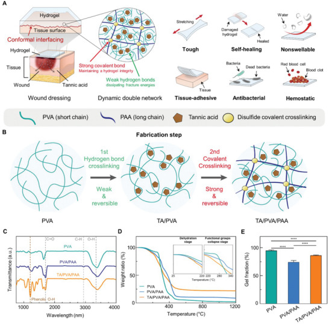

Research context and placement
The patch centers on conformal adhesion to wet bleeding tissue. Antibacterial and hemostatic behavior supply a secondary biological-interaction connection.
Research background
Moving wet wounds require more than strong adhesion. This study connects compliance and energy dissipation with hemostatic and antibacterial functions. A patch that cannot accommodate movement can concentrate load within itself or at its tissue interface. The design problem is consequently to combine deformation tolerance with tissue contact, rather than maximize a single adhesion measurement.
Approach and advances
Reversible TA/PVA/PAA interactions dissipate energy and support recovery. Tissue adhesion additionally uses surface activation, distinct from bulk-network behavior. Reversible interactions provide opportunities for bonds to disengage under loading and reform. Distinguishing that bulk response from surface activation avoids the assumption that a self-recovering gel automatically makes a strong wet-tissue adhesive.

Double-network design, fabrication and material characterization of a TA/PVA/PAA wound-dressing hydrogel.
Jae Park, Tae Young Kim, Yeonju Kim et al.. “A Mechanically Resilient and Tissue‐Conformable Hydrogel with Hemostatic and Antibacterial Capabilities for Wound Care”. Figure 1. DOI: 10.1002/advs.202303651. CC BY 4.0. Public original image copied byte-for-byte, with no resizing, cropping, annotations or re-encoding.
Source figure and caption ↗ · DOI: 10.1002/advs.202303651 ↗ · CC BY 4.0 ↗
Evaluation and conditions
Mechanics, porcine-skin contact, bacterial cultures and mouse implantation/hemostasis address separate questions. Culture assays are not infected-wound treatment. Porcine-skin contact tests ask whether the patch follows tissue movement; liver injury asks whether it reduces acute bleeding. Subcutaneous tissue response addresses another endpoint, so these tests cannot be merged into a single wound-healing claim.
Key findings
The patch reduced blood loss against untreated and PVA controls in the liver-injury model. This supports acute hemostasis under that model. Including a PVA control tests the proposed patch against a simpler polymer system. The observed bleeding reduction nevertheless does not independently separate the contributions of adhesion, mechanical conformity and biological interactions.
Limits and open questions
Short-term implantation and acute hemostasis do not establish chronic healing. Activation, pressure and injury conditions must be matched. Activity in bacterial culture and effectiveness within infected tissue are different questions. This account presents culture activity and acute hemostasis as separate evidence streams, without claiming faster healing of infected wounds or long-term regeneration.
Related external research
Tough adhesives for diverse wet surfaces
DOI: 10.1126/science.aah6362 ↗
Li’s abstract separates interfacial bonding and bulk dissipation; this patch adds hemostatic/antibacterial functions through its TA-containing network.
The abstract covers different materials and adhesion tests; adhesion energy and hemostasis time are not interchangeable metrics.
Abstract checkedCorresponding-author verification
Jungmok Seo: corresponding authorThis record concerns Jungmok Seo’s correspondence designation. Author order or an asterisk alone is not treated as confirmation; this check is separate from verification of the research content.
- Correspondence evidence source ↗
Corresponding author.
contrib/name Jungmok Seo → xref _fncrsp93pmc__; author-notes · public_repository_xml_author_and_correspondence_read
- Main-text review scope
- §2.1 network design and fabrication §2.2 mechanical durability; selected comparison discussion §2.3 interfacial stability and porcine skin §2.4 biocompatibility and blood clotting §2.5 bacterial culture assays §2.6 implantation and mouse liver hemostasis; Figure 6 §3 Conclusion
- Supplementary review scope
- Supplementary information was not read. No supplementary material is listed as reviewed, and a complete SI audit is not claimed.
- Pending verification
- SI, reproducible adhesion-activation protocols and raw statistics were not audited. Bacterial-culture and acute-hemostasis results do not establish infected-wound healing or long-term regeneration.
COVERAGE & OUTREACH
Coverage and outreach
Links are checked for their relationship to this paper. Media publication does not establish independent reporting or additional experimental validation.
신체 어느 부위나 완벽하게 지혈 가능한 물질 개발 ↗
Seo, the Yonsei–Hanyang collaboration, Advanced Science and the tannic-acid self-healing nonswelling hemostatic patch match #70.
Body read Read the body, byline and date. It reports the university team’s announcement with supplied figures; the headline’s broad efficacy claim is not adopted as a clinical conclusion.
[연구 프론티어] 서정목 교수팀, 인체에 안정적으로 부착 가능한 지혈 패치 개발(생명공학과 조승우교수) ↗
The paper-information section explicitly states the full title and DOI 10.1002/advs.202303651, directly linking #70.
Body read After web-tool failure, a read-only HTTP 200 fetch of the same URL yielded the body and posted date. It explicitly republishes Yonsei News material.
Unverified candidates and access limits (1)
Unverified candidate · 어디에든 붙이면 지혈·자가치유 가능한 패치 개발 / YTN 사이언스 ↗
The indexed Yonsei–Hanyang collaboration and conformable hemostatic patch suggest #70, but the video and full description were not reviewed.
Body access limited Only the indexed title and short description were available; direct opening failed. Date, video content and editorial independence remain unverified.
Sources and verification scope
§2.1 network design and fabrication §2.2 mechanical durability; selected comparison discussion §2.3 interfacial stability and porcine skin §2.4 biocompatibility and blood clotting §2.5 bacterial culture assays §2.6 implantation and mouse liver hemostasis; Figure 6 §3 Conclusion
The additional commentary is editorially approved within the stated evidence scope. This does not imply complete verification of all main-text and supplementary material.
- Additional main-text review scope
- §2.1 network design and fabrication §2.2 mechanical durability; selected comparison discussion §2.3 interfacial stability and porcine skin §2.4 biocompatibility and blood clotting §2.5 bacterial culture assays §2.6 implantation and mouse liver hemostasis; Figure 6 §3 Conclusion
- Additional supplementary review scope
- Supplementary information was not read. No supplementary material is listed as reviewed, and a complete SI audit is not claimed.
- Public publication baseline ↗ · #70 · 2026-10-03
- Crossref metadata ↗: Only public bibliographic metadata registered with Crossref was checked. This does not mean that the publisher page, abstract, or full text was read; full-text verification in the school Chrome session remains pending. license_urls lists registered links and does not establish permission to redistribute text or figures. It may include TDM or posting-policy links.
- A Mechanically Resilient and Tissue-conformable Hydrogel with Hemostatic and Antibacterial Capabilities for Wound Care ↗
public_web_full_text · Sections 2.1–2.6; Fig. 6; Conclusion - A Mechanically Resilient and Tissue‐Conformable Hydrogel with Hemostatic and Antibacterial Capabilities for Wound Care ↗
selected_main_text_read · Introduction, wound dressing requirements - A Mechanically Resilient and Tissue‐Conformable Hydrogel with Hemostatic and Antibacterial Capabilities for Wound Care ↗
selected_main_text_read · §2.1; §3 Conclusion - A Mechanically Resilient and Tissue‐Conformable Hydrogel with Hemostatic and Antibacterial Capabilities for Wound Care ↗
selected_main_text_read · §§2.2–2.6; Figures 2–6 descriptions - A Mechanically Resilient and Tissue‐Conformable Hydrogel with Hemostatic and Antibacterial Capabilities for Wound Care ↗
selected_main_text_read · §2.6, comparison of N.T., PVA and TA/PVA/PAA; Fig. 6G–I - A Mechanically Resilient and Tissue‐Conformable Hydrogel with Hemostatic and Antibacterial Capabilities for Wound Care ↗
selected_main_text_read · §§2.5–2.6; editorial inference from tested models, not an author-proven clinical limit - A Mechanically Resilient and Tissue‐Conformable Hydrogel with Hemostatic and Antibacterial Capabilities for Wound Care ↗
independent_reviewer_selected_main_text · Introduction; design; in-vivo biocompatibility/hemostasis, Fig.6 and liver-injury methods. - Additional commentary source ↗
Research background · Introduction, wound dressing requirements - Additional commentary source ↗
Approach and advances · §2.1; §3 Conclusion - Additional commentary source ↗
Evaluation and conditions · §§2.2–2.6; Figures 2–6 descriptions - Additional commentary source ↗
Key findings · §2.6, comparison of N.T., PVA and TA/PVA/PAA; Fig. 6G–I - Additional commentary source ↗
Limits and open questions · §§2.5–2.6; editorial inference from tested models, not an author-proven clinical limit - Additional commentary source ↗
Connections to related work · Tough adhesives for diverse wet surfaces, DOI 10.1126/science.aah6362; previously verified public abstract only